结论：当前开发机81棋火拼可以持续运行，目标笔记本未验收
六章各两次30秒完整完成，共360.045秒、122,435帧、46,979次真实攻击。所有12段始终81存活/81棋子视图，全部81个身份都出手，真实扣血为正，未出现新增Error/Exception，正式回首页收尾成功。
平均FPS范围295.35～374.46，P95 3.666～5.587 ms。P99及最慢帧仍有卡顿，不能称每一帧稳定。测试设备是13th Gen Intel(R) Core(TM) i7-13700 / NVIDIA GeForce RTX 4060；i7-12700H / Iris Xe笔记本尚未执行本轮81棋，80～90FPS目标仍未验收。
本轮验证的是满盘普通棋弹幕压力，不代表满盘正常围棋玩法、Boss十技能、移动补子或所有职业同时混合。没有迁移ECS，没有关闭章节背景，也没有降低既定弹道预算。
输入与测试口径：81独立棋不等于大棋占81格
| 项目 | 本次实际 |
|---|---|
| 版本/模式 | 7894ddf基础上的开发态测试改动；Unity 2022.3.15f1c1 / Direct3D11 / 真实PC AB |
| 场景/流程 | StartScene→正式GameFlow切GameScene→准备就绪→开战→2.5秒预热→30秒采样→窗口外12帧截图→正式回首页 |
| 81棋组成 | 36玩家/45敌方，81颗一格重弩，棋盘9×9每格独立身份；帮手是另一个不占格演员 |
| 锁死处理 | 满盘真实气为0；Editor压力输入IgnoreEncirclement=true使敌方仍可出手。准备增益按原规则发放并可能改玩家免疫，实际81出手由事件验证 |
| 生命周期负载 | hpScale=1000，每秒补满仍活棋生命；真实伤害/攻击/支援与计分运行，不使用无敌把伤害改0 |
| 画质/预算 | 1920×1080，六章完整动态背景，20文字/35弹道/16近战；本场全远程实际近战0 |
| 模型与画面 | 固定规则步长与真实FSM/事件；重弩全盘射界/共享材质，不需要同其它棋种绕障碍 |
| 观察者成本 | 预分配值类型逐帧样本/字典身份计数，窗口外格式化/截图；GPU新时间戳，缺样非0 |
| 隔离/设置 | 内存剧情/积分隔离；采样暂时VSync=0/不限帧，finally恢复时间/日志/同步；保留错误检测 |
| 缺失覆盖 | 满盘无合法空位：不产生有效移动、补子或大身体Boss；六章是背景/环境/章参数覆盖，不是六章Boss技能回归 |
完整12段帧时与分配
| 章/轮 | 实际秒/帧 | FPS | P95 ms | P99 ms | 最慢 ms | >12.5ms | GPU P50/P95 ms | 主/渲染P95 ms | GC KiB/帧 |
|---|---|---|---|---|---|---|---|---|---|
| 1/1 | 30.001/11128 | 370.921 | 3.856 | 17.127 | 57.717 | 1.15% | 0.893/1.794 | 1.988/1.085 | 32.034 |
| 2/1 | 30.004/10998 | 366.555 | 3.821 | 17.368 | 40.965 | 1.18% | 0.864/1.804 | 1.970/1.096 | 32.229 |
| 3/1 | 30.004/10075 | 335.791 | 4.630 | 17.773 | 36.339 | 1.27% | 0.946/1.955 | 2.384/1.178 | 33.776 |
| 4/1 | 30.003/11028 | 367.558 | 3.967 | 17.059 | 38.929 | 1.16% | 0.977/1.901 | 2.109/1.075 | 32.251 |
| 5/1 | 30.000/11234 | 374.461 | 3.730 | 16.905 | 34.681 | 1.11% | 0.980/1.876 | 1.973/1.065 | 30.910 |
| 6/1 | 30.002/11037 | 367.874 | 3.911 | 17.215 | 30.101 | 1.18% | 0.899/1.796 | 1.976/1.083 | 32.323 |
| 1/2 | 30.005/9012 | 300.347 | 3.936 | 17.642 | 328.383 | 1.72% | 0.856/1.805 | 1.802/1.069 | 171.479 |
| 2/2 | 30.002/8861 | 295.347 | 5.587 | 17.385 | 1316.618 | 1.46% | 0.816/1.704 | 1.909/1.505 | 35.834 |
| 3/2 | 30.000/9962 | 332.064 | 3.666 | 17.076 | 258.790 | 1.27% | 0.846/1.700 | 1.863/1.032 | 32.317 |
| 4/2 | 30.014/9877 | 329.084 | 3.818 | 17.267 | 260.788 | 1.33% | 0.923/1.804 | 1.942/1.062 | 33.316 |
| 5/2 | 30.006/9587 | 319.504 | 4.099 | 17.548 | 259.729 | 1.36% | 0.908/1.778 | 2.029/1.079 | 34.123 |
| 6/2 | 30.003/9636 | 321.167 | 4.019 | 17.428 | 259.230 | 1.36% | 0.955/1.845 | 2.047/1.083 | 34.050 |
FPS是墙钟吞吐；P95/P99是帧间隔分位数。CPU/GPU线程并行且计时有等待，不能相加。GC是Editor整帧有效Recorder，含工具/字体/业务，不全是棋子分配。所有慢帧和较慢重复轮都保留。
第二轮第2章最慢帧1,316.618ms，攻击3,492次少于第一轮3,645次，表明墙钟长暂停影响模拟推进；其余多数第二轮最慢约258～328ms。现有证据不能判定是GC、Editor或后台调度，不能把这种段列为稳定通过。
负载、真实伤害、反馈与缓存断言
| 章/轮 | 存活/视图 | 出手身份 | 攻击/远程命中 | 实际扣血 | 字/弹道/近战峰值 | 射界命中/重算 | 文案命中/新值 | 批次/SetPass | HUD/反馈/摆位ms |
|---|---|---|---|---|---|---|---|---|---|
| 1/1 | 81～81/81～81 | 81 | 3190/3190 | 372316 | 20/35/0 | 7510/0 | 1152/15 | 37.5/24.5 | 0.001/0.081/0.010 |
| 2/1 | 81～81/81～81 | 81 | 3645/3645 | 359741 | 20/35/0 | 7965/0 | 1233/8 | 38.1/24.9 | 0.001/0.083/0.011 |
| 3/1 | 81～81/81～81 | 81 | 4464/4464 | 440715 | 20/35/0 | 8784/0 | 1434/6 | 38.2/25.0 | 0.001/0.097/0.015 |
| 4/1 | 81～81/81～81 | 81 | 4023/4023 | 423033 | 20/35/0 | 8343/0 | 1356/3 | 38.1/24.9 | 0.001/0.086/0.012 |
| 5/1 | 81～81/81～81 | 81 | 4095/4095 | 408819 | 20/35/0 | 8415/0 | 1367/7 | 39.2/26.1 | 0.001/0.084/0.012 |
| 6/1 | 81～81/81～81 | 81 | 4149/4149 | 408318 | 20/35/0 | 8469/0 | 1414/0 | 38.2/25.0 | 0.001/0.087/0.013 |
| 1/2 | 81～81/81～81 | 81 | 3190/3190 | 372316 | 20/35/0 | 7510/0 | 1149/0 | 37.2/24.2 | 0.001/0.082/0.012 |
| 2/2 | 81～81/81～81 | 81 | 3492/3492 | 359087 | 20/35/0 | 7632/0 | 1193/0 | 38.9/25.5 | 0.001/0.086/0.013 |
| 3/2 | 81～81/81～81 | 81 | 4464/4464 | 440715 | 20/35/0 | 8784/0 | 1445/0 | 38.6/25.3 | 0.001/0.087/0.014 |
| 4/2 | 81～81/81～81 | 81 | 4023/4023 | 423033 | 20/35/0 | 8343/0 | 1351/0 | 38.0/24.7 | 0.001/0.087/0.013 |
| 5/2 | 81～81/81～81 | 81 | 4095/4095 | 408819 | 20/35/0 | 8415/0 | 1382/0 | 39.4/26.1 | 0.001/0.089/0.014 |
| 6/2 | 81～81/81～81 | 81 | 4149/4149 | 408318 | 20/35/0 | 8469/0 | 1414/0 | 38.7/25.4 | 0.001/0.089/0.014 |
真实伤害来自BattleHitInfo，不从屏幕×10数字反推。uniqueAttackers是当前源盘预登记81身份实际收到出手事件的计数，未用只存活但不攻击的盘面当通过。视图从BoardView.PieceCount取得，不把占格数当Renderer数量。
射界命中高是满盘几何稳定导致；实时伤害/评分仍运行。试盘数为0时明确没有移动试算，不能声称本输入验证AI深快照性能。所有显示峰值受原预算，落屏不保证每一击独立停留。
还能优化什么：按证据与源码分级
| 优先级/位置 | 观察/源码证据 | 可采取的下一步 | 不能直接承诺 |
|---|---|---|---|
| P1 慢帧归因 | P99与最慢帧高于P95，存在Editor/调度/GC等不明尾部成本 | 同设备记录帧关联CPU/频率/温度与有效GC标记；必要独立Player同场对照 | 不能把EditorLoop全部算游戏或只扣掉它宣布达标 |
| P1 真实攻击日志/计分 | BattleService.Attack每击拼战斗日志；ScoreMultiplier每次计分扫描玩家名单 | 加独立标记核对占比，事件/落屏节奏内合并日志格式化；人数/分数倍率缓存须完整失效 | 没有独立耗时/栈，暂为源码候选，不说GC全来自这里 |
| P2 弹道纹理/参数 | ShowProjectile每发取Sprite.bounds/texture/UV并写参数块，预算35对应本体/轮廓/尾迹 | Atlas绑定版本下缓存样式几何/UV；实际GPU/合批验证，避免晚绑定旧UV | 本场共享重弩材质比多职业容易合批，不能拿更少DC泛化 |
| P2 字形与屏幕矩形 | 已有缓存，但每个活动字要查询子变换/相机矩阵、每次新字25候选避让 | 同帧棋盘级相机快照和只读rect复用；字体重建/同帧位移保持失效 | 缓存字段不是硬件L1/L2命中；不能省掉透明避让 |
| P2 章节GPU | 全背景有效GPU计时，已有沼泽局部裁剪/冰胞场 | 先在Iris Xe同背景/分辨率复测，再决定剩余噪声/透明片元优先级 | RTX4060低GPU耗时不能预测核显 |
| 后续移动/Boss复合负载 | 本满盘无合法空位/大Boss，snapshotCopies通常0 | 另建留空位且保持高数量混职业、Boss/技能/位移场景验证最坏路径 | 这轮81火拼不覆盖所有AI/技能，不因此断言已极致 |
本任务以测试与报告为主，生产算法保持当前实现；上表是有根据的下一轮优化定位，不声称未经A/B的新收益，也不为了FPS降低画质或攻击。
48棋历史对照与解释
48棋历史为混职业、空位/移动/补子条件不同，今天81棋为全重弩共享材质、稳定几何，采样时段与编辑器状态也不同。不能直接将本轮高FPS与早前48棋低FPS计算“增加棋子提高性能”或净收益。应另做同组成/同状态48与81数量扫描，或混职业高密度场景。
81普通棋能射击不是81颗Boss、81条常驻弹道或无限飘字。游戏原有显示预算限制负荷，模型仍完整结算，报告说明这个边界比仅列帧率重要。
截图与动态证据
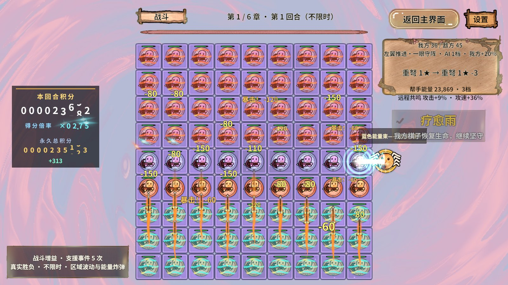
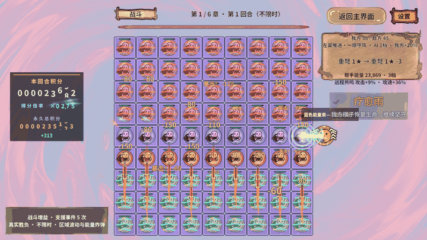
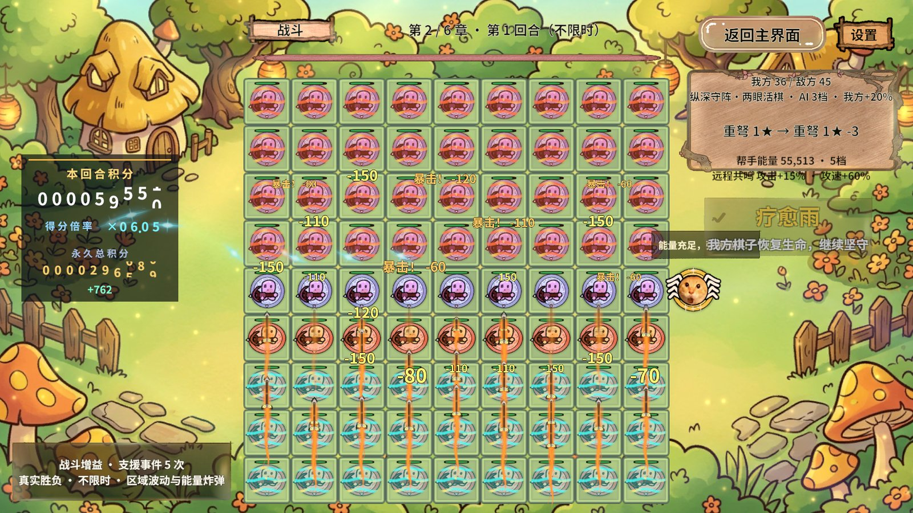
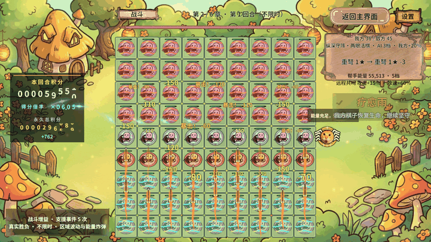
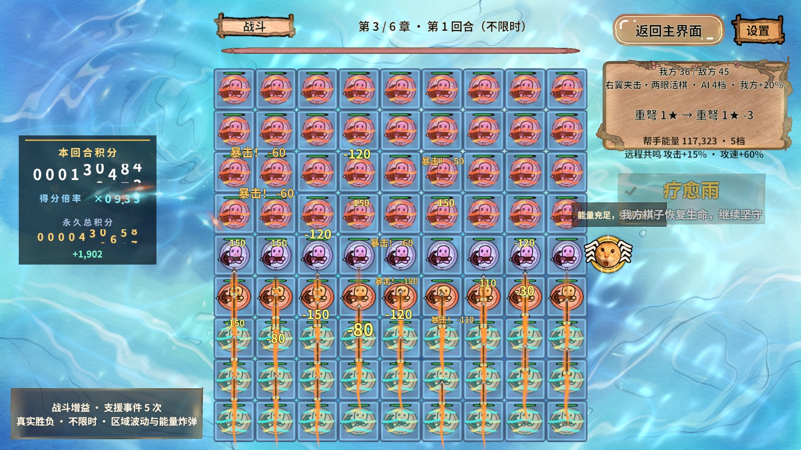
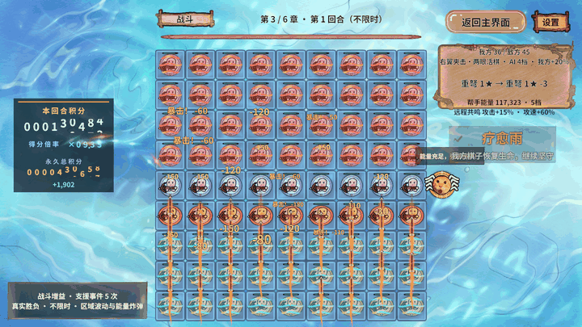
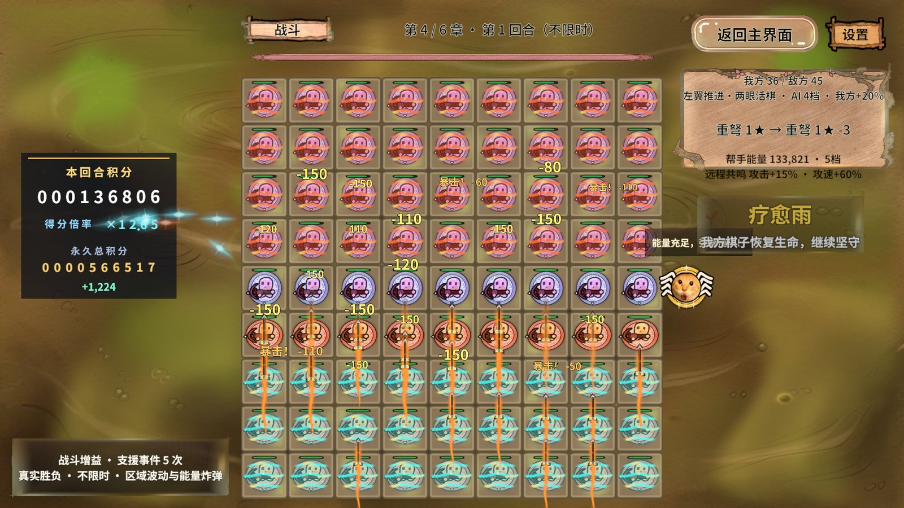
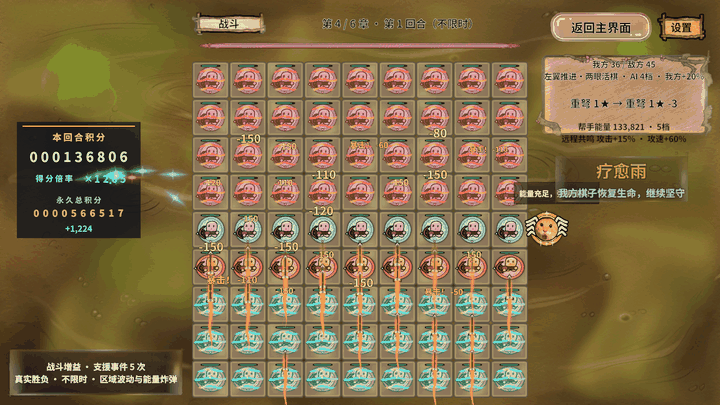
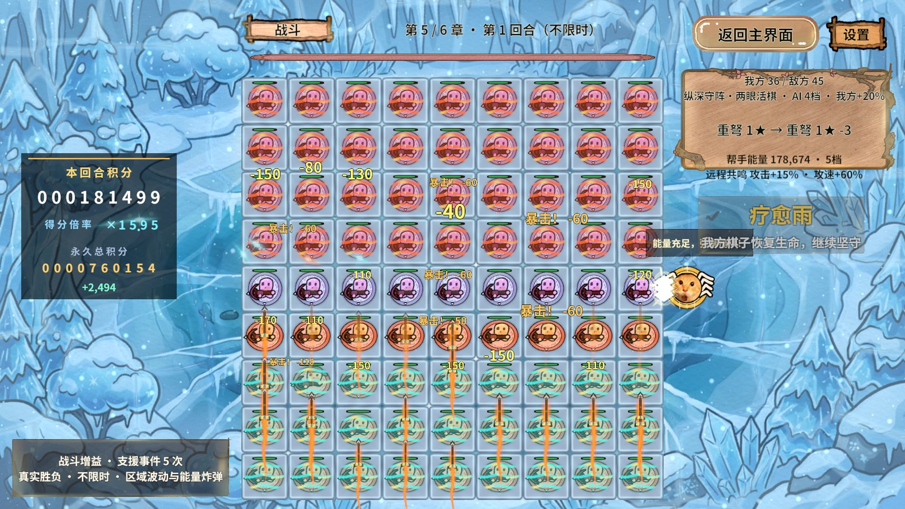
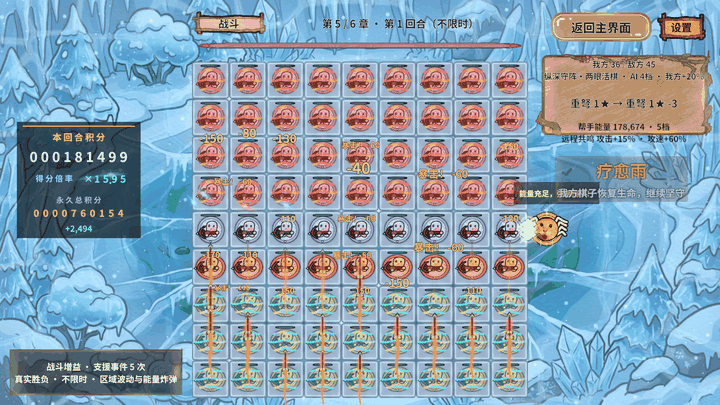
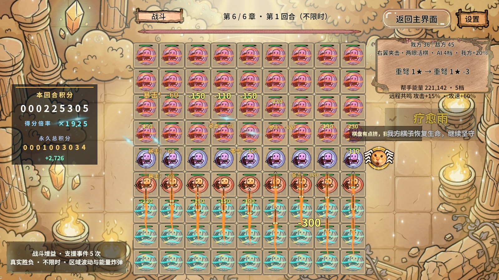
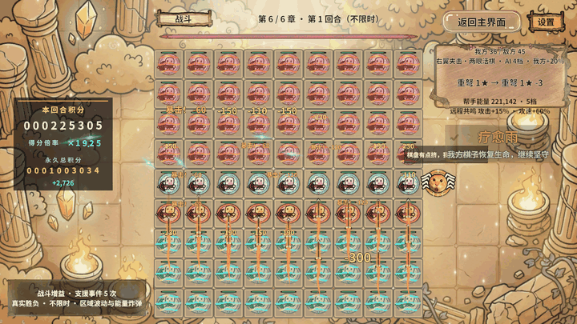
作业身份、收尾与复测
| 字段 | 实际 |
|---|---|
| runId | 20261030-061909-4ac5a5e3 |
| actual seconds | 360.045 |
| complete rows | 12 |
| status/cleaned/cancelled | completed/True/False |
| errors | 0 |
| return logic/piece refs | 0/0 |
| return bundle count | 17 |
原状态为非Play、StartScene无未保存内容；本次最后恢复非Play并解除测试隔离。机器原JSON/PNG在忽略.codex/work/perf-2026-10-30/20261030-061909-4ac5a5e3；文档只摘要/必要JPEG/GIF，无ZIP、Profiler.raw/.data或内存快照。
初次第1章10秒预检查completed/cleaned/error0，确认满盘出手后再启动正式12段。Unity最终编译0错误；PC59包构建成功；原查询缓存31,947条控制台回归通过。新增造局与采样限定Editor，本轮未修改正式生产攻击/画面算法。
复测真实动作：game.perf.begin，label自定、first=1,last=6,seconds=30,repeats=2,pieces=81；开始成功不是完成，game.perf.state解析data.text，核对唯一身份/12段/81存活与视图/81出手/真实扣血/错误0/清理。目标笔记本应同AB/分辨率/输入复跑；冷启动和真实游戏设备性能分别报告。